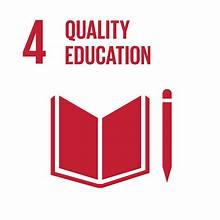

4 Quality Education🕮
Ensure inclusive and equitable quality education and promote lifelong learning opportunities for all

Things to do ~ Take action
Targets:
- By 2030, ensure that all girls and boys have access to quality early childhood development, care and pre-primary education so that they are ready for primary education.
- By 2030, substantially increase the number of youth and adults who have relevant skills, including technical and vocational skills, for employment, decent jobs and entrepreneurship.
- By 2030, eliminate gender disparities in education and ensure equal access to all levels of education and vocational training for the vulnerable, including persons with disabilities, indigenous peoples and children in vulnerable situations.
- By 2030, substantially increase the number of youth and adults who have relevant skills, including technical and vocational skills, for employment, decent jobs and entrepreneurship.
Education liberates the intellect, unlocks the imagination and is fundamental for self-respect. It is the key to prosperity and opens a world of opportunities, making it possible for each of us to contribute to a progressive, healthy society. Learning benefits every human being and should be available to all

Things to do
- Find a Goal 4 charity you want to support. Any donation, big or small, can make a difference!
- Mentor young people. You can provide tutoring and homework assistance, teach a language or deliver a lesson on the Global Goals.
- Donate your used books. The easiest way to give access to knowledge is to donate your used books to someone.
- Visit your local school and ask what school supplies they need. Start a school supply drive in your community.
Take action today!
There are 17 Global Goals and many positive actions you can take. So which ones should you focus on? We’ve created a quiz to help you decide. Through it you’ll discover three Global Goals you feel most aligned with and three things you can start doing today to make a difference.
link to quiz